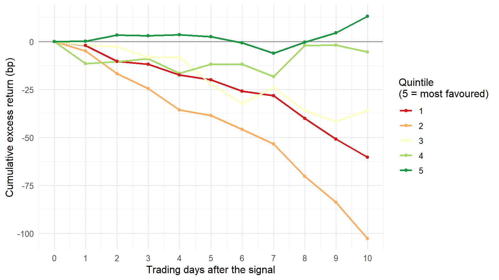
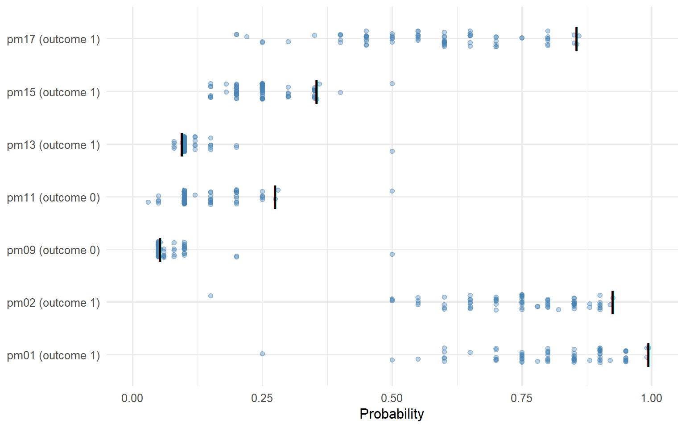
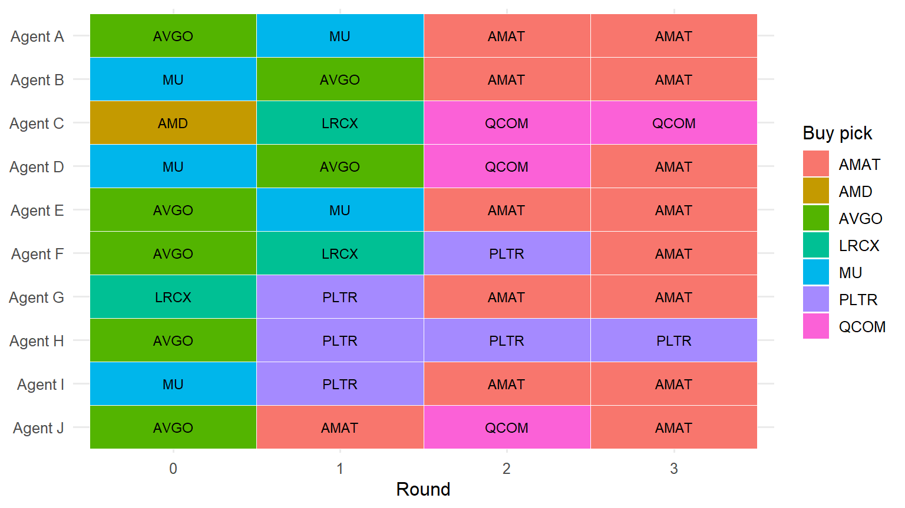

library(data.table)
library(ggplot2)
DATA <- file.path("..", "data")
OUT <- file.path("..", "output")
dir.create(OUT, showWarnings = FALSE)Notebook 2 — From twin answers to a market signal
LLMSS 2026, Workshop 2 (The Wisdom of Digital Twins) · Hong Kong, 13 October 2026
What you will do
In Notebook 1 you interviewed a handful of finfluencer twins. This notebook works with the full panel: about 90 twins of real financial influencers on X, each interviewed every trading day and asked to rate 100 large US stocks from 0 (a very strong sell) to 100 (a very strong buy). You will:
- aggregate: turn each day’s answers into one number per stock, a signal saying how bullish the twins are on it that day;
- match: line each signal up with what the stock did afterwards, relative to the S&P 500;
- backtest: sort the stocks on the signal every day, and ask whether the ones the twins liked beat the ones they didn’t;
- score forecasts: look at a second task, where the same kind of twins gave probabilities for economic events traded on Polymarket, and compare them with the market price and with what happened;
- watch twins deliberate: replay one stored session in which ten twins argued for four rounds before agreeing on one stock to buy.
Nothing here calls a language model. The interviews have already been run and are loaded from files, so the notebook runs offline in a few seconds.
How to read this notebook. As in Workshop 1, every table and figure the code prints has a number, given in bold just above the code that prints it, and the text says which table, row or column a number comes from.
The first block loads the R packages the notebook uses and sets the folders it reads from and writes to.
1. Inputs
The block below loads the twins’ answers, already added up by stock and day, as a table called panel, and prints its size and span.
Table 2.1. panel: rows, trading days, stocks and twins per day.
panel <- fread(file.path(DATA, "ff_signal_panel.csv"))
panel[, event_date := as.IDate(event_date)]
data.table(rows = nrow(panel),
days = uniqueN(panel$event_date),
first_day = min(panel$event_date),
last_day = max(panel$event_date),
stocks = uniqueN(panel$ticker),
median_twins_per_row = median(panel$n_twins))| rows | days | first_day | last_day | stocks | median_twins_per_row |
|---|---|---|---|---|---|
| 5194 | 52 | 2026-06-25 | 2026-09-14 | 100 | 85 |
Each row of panel is one stock on one trading day. Its columns summarise what the twins said about that stock that day:
| Column | Meaning |
|---|---|
n_twins |
twins who rated the stock that day |
mean_rec |
their average rating, 0–100 |
sd_rec |
how much they disagreed: the standard deviation of the ratings |
buy_share |
share of twins rating it 65 or more (a buy) |
sell_share |
share rating it 35 or less (a sell) |
net_buy_share |
buy_share − sell_share: from −1 (all sell) to +1 (all buy) |
mean_conf |
their average confidence in the rating, 0–100 |
Two details of how a day is defined, both settled before the file was written. A twin interviewed after 15:30 New York time counts towards the next trading day, because by then the market has nearly closed and the twin’s view could only be acted on the following day. And if a twin was interviewed twice on one day, only the later interview counts.
The block below prints the first five rows so you can see the columns filled in.
Table 2.2. panel: the first five rows.
head(panel, 5)| event_date | ticker | n_twins | mean_rec | sd_rec | buy_share | sell_share | net_buy_share | mean_conf |
|---|---|---|---|---|---|---|---|---|
| 2026-06-25 | AAPL | 85 | 62.73 | 12.22 | 0.5882 | 0.0353 | 0.5529 | 52.85 |
| 2026-06-25 | ABBV | 83 | 53.82 | 6.14 | 0.1205 | 0.0000 | 0.1205 | 31.64 |
| 2026-06-25 | ABT | 81 | 53.89 | 6.74 | 0.1111 | 0.0000 | 0.1111 | 35.71 |
| 2026-06-25 | ADBE | 83 | 56.87 | 12.48 | 0.3614 | 0.0723 | 0.2891 | 40.35 |
| 2026-06-25 | ADI | 82 | 57.44 | 10.11 | 0.3780 | 0.0366 | 0.3414 | 36.96 |
The second file holds the stocks’ returns. For every stock and trading day it has the day’s log excess return: the stock’s log return from the previous close to this close, minus the S&P 500’s. A positive number means the stock beat the market that day. Log returns add up over days, which is why the file uses them. The returns are computed from Yahoo Finance adjusted closing prices.
Table 2.3. rets: rows, stocks and span.
rets <- fread(file.path(DATA, "ff_excess_returns.csv"))
rets[, date := as.IDate(date)]
data.table(rows = nrow(rets), stocks = uniqueN(rets$ticker),
first_day = min(rets$date), last_day = max(rets$date))| rows | stocks | first_day | last_day |
|---|---|---|---|
| 8400 | 100 | 2026-06-01 | 2026-09-29 |
The returns run about two weeks past the last interview day in Table 2.1, so even the last signals can be followed for ten trading days.
2. From answers to a signal
A signal is one number per stock and day that ranks the stocks from most to least favoured. panel offers several; this notebook uses net_buy_share, the one used in the Talking to Machines finfluencer research, and Exercise 2.1 asks you to try mean_rec instead.
The block below takes the last interview day in the panel and prints the five stocks the twins were most bullish on and the five they were most bearish on.
Table 2.4. The most and least favoured stocks on the last day.
last_day <- max(panel$event_date)
day <- panel[event_date == last_day][order(-net_buy_share)]
rbind(cbind(group = "most favoured", head(day, 5)[, .(ticker, net_buy_share, mean_rec, sd_rec)]),
cbind(group = "least favoured", tail(day, 5)[, .(ticker, net_buy_share, mean_rec, sd_rec)]))| group | ticker | net_buy_share | mean_rec | sd_rec |
|---|---|---|---|---|
| most favoured | GOOG | 0.7841 | 72.34 | 13.05 |
| most favoured | MSFT | 0.7500 | 68.47 | 14.27 |
| most favoured | AMD | 0.7387 | 68.82 | 15.64 |
| most favoured | META | 0.7387 | 69.45 | 15.61 |
| most favoured | AVGO | 0.7356 | 70.16 | 14.48 |
| least favoured | LOW | 0.0113 | 50.73 | 4.51 |
| least favoured | IBM | 0.0000 | 52.64 | 11.25 |
| least favoured | MO | -0.0227 | 47.30 | 8.19 |
| least favoured | C | -0.0238 | 48.89 | 6.85 |
| least favoured | T | -0.0454 | 48.30 | 5.61 |
Notice in Table 2.4 that even the “least favoured” stocks often have a net_buy_share above zero. The twins are bullish on most stocks most of the time. What matters for a signal is the ranking on a given day, not the level. That is why the backtest below compares stocks with each other on the same day.
3. Matching signals to later returns
A signal on day t can only be judged on what happens after it. The twin answered before 15:30 on day t, so the earliest you could trade on it is the close of day t. The block below adds, for every stock and day, the log excess return over the next h trading days: the sum of the daily returns on days t+1 to t+h. It does this for h = 1, 5 and 10.
setorder(rets, ticker, date)
for (h in c(1L, 5L, 10L)) {
col <- paste0("fwd_", h, "d")
rets[, (col) := Reduce(`+`, lapply(seq_len(h), function(k)
shift(log_excess_ret, k, type = "lead"))), by = ticker]
}The block below joins those forward returns onto panel by stock and day, as a table called events, and prints how many stock-days have a forward return at each horizon.
Table 2.5. events: stock-days with a forward return, by horizon.
events <- merge(panel, rets[, .(ticker, event_date = date, fwd_1d, fwd_5d, fwd_10d)],
by = c("ticker", "event_date"))
events[, .(with_1d = sum(!is.na(fwd_1d)), with_5d = sum(!is.na(fwd_5d)),
with_10d = sum(!is.na(fwd_10d)))]| with_1d | with_5d | with_10d |
|---|---|---|
| 5194 | 5194 | 5194 |
4. The backtest
The test is simple. Every day, sort that day’s stocks on net_buy_share into five equal groups, quintiles: quintile 1 holds the fifth the twins liked least, quintile 5 the fifth they liked most. Then average the forward excess return within each quintile, day by day. If the twins know something, quintile 5 should beat quintile 1. The difference, quintile 5 minus quintile 1, is the return of a long–short portfolio: buy the favoured fifth, short the disfavoured fifth, so the market’s own movement cancels out.
The block below assigns the quintiles. Ties are broken at random, with a fixed seed so everyone gets the same answer.
set.seed(13)
events[, quintile := ceiling(5 * frank(net_buy_share, ties.method = "random") / .N),
by = event_date]The block below averages the forward return in each quintile on each day, then across days, and prints it in basis points (1 bp = 0.01 percentage points).
Table 2.6. Mean forward excess return by quintile (bp), averaged over days.
q_day <- events[, .(fwd_1d = mean(fwd_1d, na.rm = TRUE), fwd_5d = mean(fwd_5d, na.rm = TRUE),
fwd_10d = mean(fwd_10d, na.rm = TRUE)), by = .(event_date, quintile)]
q_tab <- q_day[, lapply(.SD, function(x) round(1e4 * mean(x, na.rm = TRUE), 1)),
by = quintile, .SDcols = c("fwd_1d", "fwd_5d", "fwd_10d")][order(quintile)]
q_tab| quintile | fwd_1d | fwd_5d | fwd_10d |
|---|---|---|---|
| 1 | -2.0 | -20.0 | -60.4 |
| 2 | -4.9 | -38.6 | -102.6 |
| 3 | -1.9 | -22.1 | -36.1 |
| 4 | -11.5 | -11.9 | -5.4 |
| 5 | 0.1 | 2.4 | 13.1 |
Figure 2.1 shows the same thing over time: for each quintile, the average cumulative excess return from the day of the signal (day 0) to ten trading days later. The block below computes it for every horizon from 1 to 10 and plots it.
Figure 2.1. Cumulative excess return after the signal, by quintile.
path <- rbindlist(lapply(1:10, function(h) {
r <- copy(rets)[, fwd := Reduce(`+`, lapply(seq_len(h), function(k)
shift(log_excess_ret, k, type = "lead"))), by = ticker]
e <- merge(events[, .(ticker, event_date, quintile)],
r[, .(ticker, event_date = date, fwd)], by = c("ticker", "event_date"))
e[, .(bp = 1e4 * mean(fwd, na.rm = TRUE)), by = .(event_date, quintile)][
, .(bp = mean(bp, na.rm = TRUE)), by = quintile][, h := h]
}))
path <- rbind(data.table(quintile = 1:5, bp = 0, h = 0L), path)
ggplot(path, aes(h, bp, colour = factor(quintile), group = quintile)) +
geom_hline(yintercept = 0, colour = "grey60") +
geom_line(linewidth = 0.9) + geom_point(size = 1.4) +
scale_colour_brewer(palette = "RdYlGn", name = "Quintile\n(5 = most favoured)") +
scale_x_continuous(breaks = 0:10) +
labs(x = "Trading days after the signal", y = "Cumulative excess return (bp)") +
theme_minimal(base_size = 12)
The block below computes the long–short return day by day, quintile 5 minus quintile 1, and summarises it: its average, its t-statistic (the average divided by its standard error), and the share of days on which it was positive.
Table 2.7. The long–short portfolio (quintile 5 minus quintile 1).
ls <- dcast(q_day, event_date ~ quintile, value.var = c("fwd_1d", "fwd_5d", "fwd_10d"))
ls_tab <- rbindlist(lapply(c("1d", "5d", "10d"), function(h) {
s <- ls[[paste0("fwd_", h, "_5")]] - ls[[paste0("fwd_", h, "_1")]]
s <- s[is.finite(s)]
data.table(horizon = h, days = length(s), mean_bp = round(1e4 * mean(s), 1),
t_stat = round(mean(s) / (sd(s) / sqrt(length(s))), 2),
share_positive = round(mean(s > 0), 2))
}))
ls_tab| horizon | days | mean_bp | t_stat | share_positive |
|---|---|---|---|---|
| 1d | 52 | 2.1 | 0.09 | 0.50 |
| 5d | 52 | 22.5 | 0.44 | 0.54 |
| 10d | 52 | 73.5 | 1.17 | 0.52 |
How to read Table 2.7. Row 1d, column mean_bp is what the long–short portfolio earned over the day after the signal, on average across the days in column days. Rows 5d and 10d hold the positions longer. A t-statistic around 2 or more is the usual bar for “unlikely to be luck”.
Two cautions before you read too much into it:
- The window is short. 52 days (Table 2.7, column
days) is a few months of one market. The same test on a longer window, or a different one, can come out differently. - The 5- and 10-day t-statistics are too generous. Consecutive days’ 10-day returns share nine of their ten days, so they are not independent, and the simple standard error above understates the uncertainty. Exercise 2.2 asks you to fix this.
5. Prediction markets
The twins were also asked about the economy. On 21 April 2026, 76 twins gave a probability for each of 17 events traded on Polymarket, a prediction market. Examples: “the Fed makes no change at its June 2026 meeting”, “unemployment reaches 5.0% at some point in 2026”. Each question showed the twin the event’s Polymarket price that day. A price of 0.93 means traders, together, put the chance at about 93%.
By mid-August 2026, 9 of the 17 events had settled. The block below loads the file as pm and prints, for each settled event, the twins’ average probability, the Polymarket price they were shown, and the outcome (1 = it happened).
Table 2.8. Settled events: twins’ average probability, market price, outcome.
pm <- fread(file.path(DATA, "ff_prediction_markets.csv"))
settled <- pm[!is.na(outcome)]
settled[, .(twins_mean = round(mean(twin_prob, na.rm = TRUE), 2),
market_price = round(market_prob[1], 2), outcome = outcome[1]),
by = .(code, question)]| code | question | twins_mean | market_price | outcome |
|---|---|---|---|---|
| pm01 | Fed makes no change at the 29 April 2026 meeting | 0.81 | 0.99 | 1 |
| pm02 | Fed makes no change at the June 2026 meeting | 0.74 | 0.92 | 1 |
| pm05 | Annual CPI inflation 2.8% or higher in the March 2026 release | 0.65 | NA | 1 |
| pm06 | Annual inflation above 3.0% at some point in 2026 | 0.62 | NA | 1 |
| pm09 | Q1 2026 GDP growth above 3.5% (annualised) | 0.07 | 0.05 | 0 |
| pm11 | Powell leaves the Fed Board by 30 May 2026 | 0.14 | 0.28 | 0 |
| pm13 | 10-year Treasury yield hits 4.4% by 30 April 2026 | 0.11 | 0.10 | 1 |
| pm15 | Annual inflation above 4% at some point in 2026 | 0.25 | 0.36 | 1 |
| pm17 | Annual inflation above 3.5% at some point in 2026 | 0.57 | 0.86 | 1 |
Two rows of Table 2.8 have no market_price: the twins were not shown one for those questions.
A standard score for probability forecasts is the Brier score: the average of (probability − outcome)², where the outcome is 0 or 1. Zero is perfect; always saying 0.5 scores 0.25. Lower is better. The block below scores three forecasters on the settled events that had a market price: the individual twins, the twins’ average (the “crowd”), and the market price itself.
Table 2.9. Brier scores on the settled events with a market price (lower is better).
s <- settled[!is.na(market_prob) & !is.na(twin_prob)]
crowd <- s[, .(p = mean(twin_prob), m = market_prob[1], o = outcome[1]), by = code]
data.table(forecaster = c("individual twins", "twin crowd (average)", "market price"),
events = uniqueN(s$code),
brier = round(c(mean((s$twin_prob - s$outcome)^2),
mean((crowd$p - crowd$o)^2),
mean((crowd$m - crowd$o)^2)), 3))| forecaster | events | brier |
|---|---|---|
| individual twins | 7 | 0.248 |
| twin crowd (average) | 7 | 0.237 |
| market price | 7 | 0.191 |
In Table 2.9 the twin crowd (twin crowd (average) row, 0.237) scores a little better than the typical single twin (individual twins row, 0.248): averaging cancels some of each twin’s own noise. Both are close to the 0.25 of always saying 0.5, and both are worse than the market price (market price row, 0.191).
Figure 2.2 shows each twin’s probability (a dot) against the market price it was shown (the black bar), for every settled event with a price, with the outcome in the panel title.
Figure 2.2. Twins’ probabilities against the market price, settled events.
s[, label := sprintf("%s (outcome %d)", code, outcome)]
ggplot(s, aes(x = twin_prob, y = label)) +
geom_jitter(height = 0.15, width = 0, alpha = 0.35, colour = "steelblue") +
geom_point(aes(x = market_prob), shape = 124, size = 7) +
scale_x_continuous(limits = c(0, 1)) +
labs(x = "Probability", y = NULL) +
theme_minimal(base_size = 12)
What this can and cannot show. The twins were shown the market price, so this is not an independent forecast set against the market: it asks how far the twins move away from a number they were given, and whether moving away helped. Look at Figure 2.2 for where the twins spread widely around the bar and where they sit on it. And with one interview day and seven events, Table 2.9 is a description, not a test.
6. Twins that talk to each other
Every twin so far answered alone. Talking to Machines also runs a second design every trading day: ten finfluencer twins discuss the day’s market in short, tweet-length posts, over four rounds, and the stock most of them back at the end is bought. This section replays one stored session, from 28 September 2026. No model is called. The ten agents are a different set of finfluencers from Notebook 1 and are renamed Agent A to Agent J; the posts are theirs, with names and hashtags removed.
The block below loads the posts as posts, one row per agent and round, and the session’s settings as session, and prints the settings.
Table 2.10. The deliberation session of 28 September 2026.
posts <- fread(file.path(DATA, "ff_deliberation_posts.csv"))
session <- jsonlite::fromJSON(file.path(DATA, "ff_deliberation_session.json"))
data.table(date = session$date, model = session$model, agents = session$n_agents,
rounds = session$rounds, minutes = session$minutes, cost_usd = session$cost_usd)| date | model | agents | rounds | minutes | cost_usd |
|---|---|---|---|---|---|
| 2026-09-28 | gpt-4.1-mini | 10 | 4 | 3.2 | 0.12 |
The model in Table 2.10 is not the gpt-5-mini of the daily panel: this design was built separately, on gpt-4.1-mini.
The rules change from round to round. In round 0 each agent posts blind, seeing nobody else. In rounds 1 and 2 each agent is shown posts written before its turn (the columns sees_this_round and sees_total count them) and gets the instruction below. The block prints it word for word.
Text 2.1. The instruction for rounds 1 and 2.
wrap <- function(x) cat(unlist(lapply(strsplit(x, "
")[[1]], function(l)
if (nzchar(l)) strwrap(l, 80, exdent = if (startsWith(l, "- ")) 2 else 0) else "")), sep = "
")
wrap(session$instructions$round_1)This is Round 1 of the discussion. You've seen what your fellow commentators
think.
**ANTI-HERDING RULE:** If 3 or more commentators in the visible discussion have
already named the SAME ticker, you MUST pick a different one (unless you have a
genuinely contrarian *bearish* take on that crowded ticker). The group is more
valuable with breadth than with pile-on.
Do NOT just agree with the group. Push back HARD. If you disagree with another
commentator, say so bluntly and explain why they're wrong. Defend your ticker
or attack theirs. Call out weak analysis. This is a competitive debate — argue
your position. Post your updated take in 2-4 sentences MAX (under 280
characters if possible, never more than 50 words). Write like a real tweet —
punchy, direct, confrontational where warranted. No essays.The final round replaces it with the instruction below.
Text 2.2. The instruction for round 3, the last.
wrap(session$instructions$round_3)This is the FINAL round. The debate is over. The group must now commit — most
of you should AGREE on ONE stock to trade today. Weigh the evidence and COMMIT.
**CRITICAL — NO COPY-PASTE:**
- Use YOUR OWN voice and phrasing. Do NOT repeat another commentator's sentence
structure or exact wording.
- State in your persona's style why the pick is right today — your own angle,
your own vocabulary.
- If you see the same phrase repeated by 2+ other agents (e.g. "sticky SaaS
revenue, margin expansion"), you MUST rephrase. Lazy template-copying is
forbidden.
Your tweet: 1-2 sentences in your own voice, name your final committed pick
($TICKER and direction), and briefly state your unique reason. Plain,
conviction-first. No hedging. No echoing.The block below puts each agent’s buy pick side by side across the rounds. The contrarian agent was the session’s designated devil’s advocate: told to push back on whatever consensus formed and, in the last round, to pick a different stock if five or more others were backing the same one, unless that stock was genuinely the best choice.
Table 2.11. Each agent’s buy pick, by round.
dcast(posts, agent + style + contrarian ~ paste0("round_", round), value.var = "buy_ticker")| agent | style | contrarian | round_0 | round_1 | round_2 | round_3 |
|---|---|---|---|---|---|---|
| Agent A | Value | FALSE | AVGO | MU | AMAT | AMAT |
| Agent B | Momentum | FALSE | MU | AVGO | AMAT | AMAT |
| Agent C | Diversified | FALSE | AMD | LRCX | QCOM | QCOM |
| Agent D | Macro | FALSE | MU | AVGO | QCOM | AMAT |
| Agent E | Diversified | FALSE | AVGO | MU | AMAT | AMAT |
| Agent F | Technical | FALSE | AVGO | LRCX | PLTR | AMAT |
| Agent G | Income/Dividend | TRUE | LRCX | PLTR | AMAT | AMAT |
| Agent H | Diversified | FALSE | AVGO | PLTR | PLTR | PLTR |
| Agent I | Technical | FALSE | MU | PLTR | AMAT | AMAT |
| Agent J | Diversified | FALSE | AVGO | AMAT | QCOM | AMAT |
The block below counts the agents behind each stock in each round.
Table 2.12. Number of agents picking each stock to buy, by round.
counts <- dcast(posts, buy_ticker ~ paste0("round_", round), fun.aggregate = length,
value.var = "agent")
counts[order(-round_3, -round_0)]| buy_ticker | round_0 | round_1 | round_2 | round_3 |
|---|---|---|---|---|
| AMAT | 0 | 1 | 5 | 8 |
| PLTR | 0 | 3 | 2 | 1 |
| QCOM | 0 | 0 | 3 | 1 |
| AVGO | 5 | 2 | 0 | 0 |
| MU | 3 | 2 | 0 | 0 |
| AMD | 1 | 0 | 0 | 0 |
| LRCX | 1 | 2 | 0 | 0 |
Figure 2.3 draws Table 2.11 as a grid, one colour per stock, so the drift is easy to follow.
Figure 2.3. Buy picks by agent and round.
ggplot(posts, aes(x = factor(round), y = agent, fill = buy_ticker)) +
geom_tile(colour = "white") +
geom_text(aes(label = buy_ticker), size = 3.2) +
scale_y_discrete(limits = rev) +
labs(x = "Round", y = NULL, fill = "Buy pick") +
theme_minimal(base_size = 12)
In Table 2.12, no agent picks AMAT in round 0 (round_0 column, AMAT row); by round 3, eight of the ten do. The block below prints the first two posts that name AMAT, with how many posts each agent had seen before writing.
Text 2.3. Where AMAT came from.
show_posts <- function(d) for (i in seq_len(nrow(d)))
cat(sprintf("Round %d, %s (had seen %d posts), buys %s:", d$round[i], d$agent[i],
d$sees_total[i], d$buy_ticker[i]),
strwrap(d$text[i], 76, indent = 2, exdent = 2), "", sep = "
")
show_posts(posts[grepl("AMAT", text)][1:2])Round 1, Agent J (had seen 6 posts), buys AMAT:
Y’all sleeping on $AMAT here. When everyone’s blinking crowds on $MU,
$AVGO, and $LRCX, $AMAT quietly rides the same AI chip boom with better
valuation leverage. Not just a chipmaker—it’s wafer fab’s dirty secret
weapon, less crowded, more juice left. Herd chasin’? Nah, eat it and
sign.
Round 2, Agent B (had seen 10 posts), buys AMAT:
$MU, $AVGO, $LRCX all lit and crowded, no doubt. But the mega herd has it
stuck in the same loop. $AMAT punches above weight quietly—WAfer fab tech
finesse with less noise and better valuation leverage. This ain’t
herding; it’s tactical edge. Dip buyers should pivot here. Sheeeesh 🔥The block below prints the posts that cite the anti-herding rule of Text 2.1.
Text 2.4. Agents applying the rule.
show_posts(posts[grepl("anti-herding", text, ignore.case = TRUE)])Round 2, Agent E (had seen 11 posts), buys AMAT:
$MU, $AVGO, and $LRCX are well-tread waters now — 3+ nominators on each,
so anti-herding kicks in. $PLTR has momentum but faces split convictions,
which weakens buy confidence given cyclical risk.
$AMAT’s the overlooked fab infrastructure leverage play, riding AI capex
but flying under radar with more juice left and leaner valuation. It’s
the smarter risk/reward pick amid chip overcrowding and inflation
worries.
Round 2, Agent A (had seen 12 posts), buys AMAT:
The chip herding on $MU, $AVGO, and $LRCX is obvious — 3+ nominators
each, so anti-herding compels stepping aside from the crowded familiar
trio. $AMAT is glaringly overlooked in this crowded debate. It offers
wafer fab innovation with more valuation leverage and less noise. Ignore
$PLTR hype—still mixed street views and cyclic exposure. $AMAT is where
the incremental durable moat compounder edge lies quietly powering AI
fab. Less crowded, more runway. That’s a real edge vs cyclical software
speculation.At the end, another call to the model reads the whole discussion and writes a summary. The block below prints its verdict on what the discussion added.
Text 2.5. The session’s own verdict.
wrap(session$summary$value_added)The discussion produced better analysis by challenging initial crowded chip
plays and highlighting overlooked contrarian picks like $AMAT and $QCOM,
mitigating herd risk and improving risk/reward perspectives.What this can and cannot show. Text 2.5 credits the discussion with “mitigating herd risk”, yet in Table 2.12 the group ends on the one stock a single agent brought up in round 1 (Text 2.3), and later posts repeat that agent’s argument. Part of the result is the design: the rule in Text 2.1 pushes agents off the stocks three others have named (Text 2.4 shows them saying so), and Text 2.2 tells them to agree. Even Agent G, the devil’s advocate, ends on AMAT (Table 2.11, round_3 column). Change the rules and a different stock may win. This is one session on one day, and whether buying AMAT paid off is not assessed here.
Exercises
Exercise 2.1 — another signal. Re-run the quintile sort of Section 4 with mean_rec instead of net_buy_share. Does the long–short return in Table 2.7 change? Why might a share of buy votes and an average rating rank stocks differently?
Exercise 2.2 — honest standard errors. The 5- and 10-day rows of Table 2.7 use overlapping returns. Recompute them using only every 5th (or 10th) day, so that no two holding periods overlap. How do mean_bp and t_stat change?
Exercise 2.3 — disagreement. Split the stock-days by sd_rec at its median. Is the signal stronger when the twins agree, or when they disagree?
Exercise 2.4 — moving off the price. In pm, for each settled event with a market price, compute how far the twin crowd sat from the price (mean(twin_prob) − market_prob). Were the twins right more often when they moved away from the market, or when they stayed close?
Exercise 2.5 — the sell side. Repeat Table 2.12 with sell_ticker in place of buy_ticker. What happens to MU, which three agents wanted to buy in round 0?
Exercise 2.6 — did the rule bind? Five agents picked AVGO in round 0 (Table 2.12). In Table 2.11, which of them still pick it in round 1, and which agents move to AVGO in round 1? Is that what the rule in Text 2.1 asks for?
The block below saves events to output/, for your own use after the workshop.
fwrite(events, file.path(OUT, "ff_events.csv"))